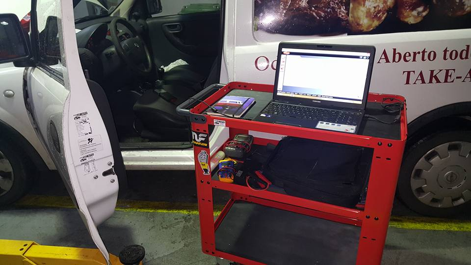
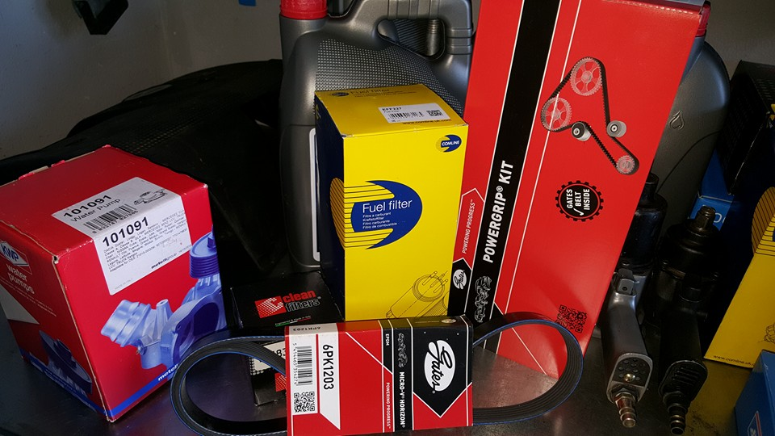
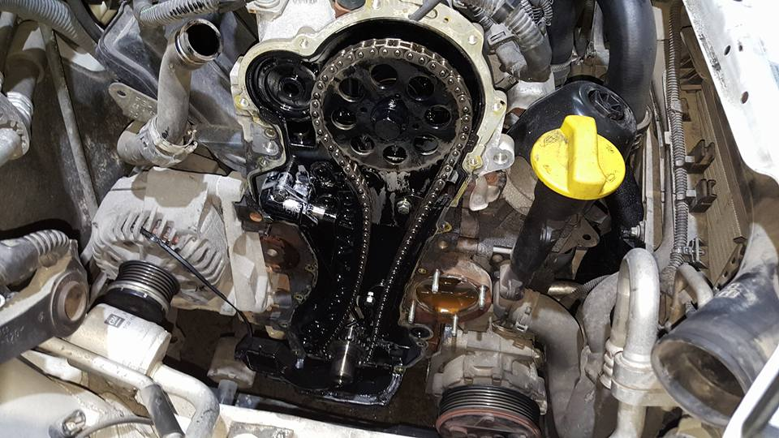
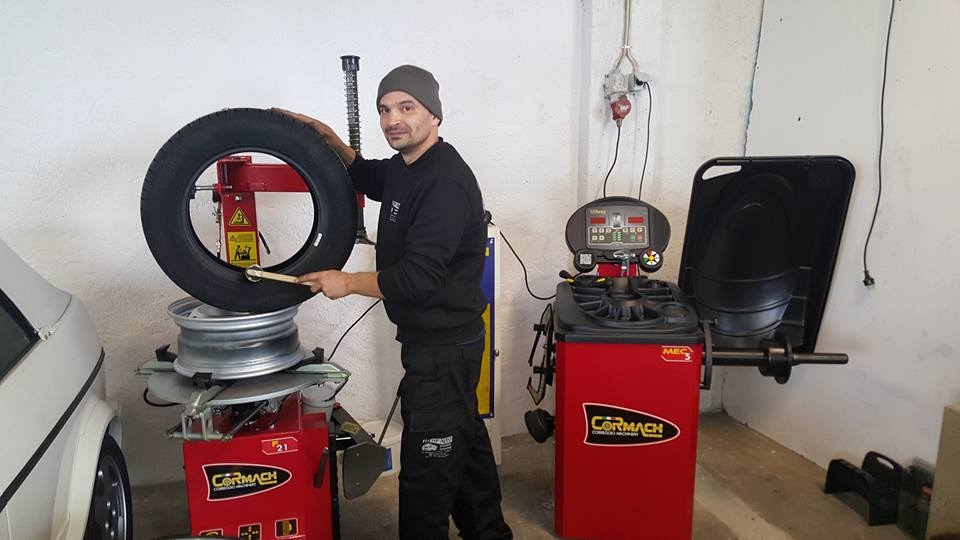
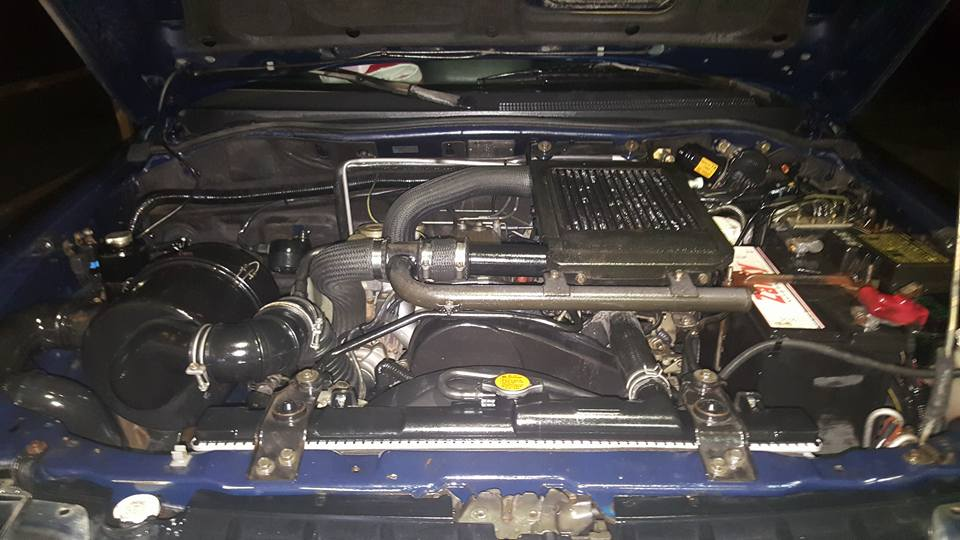
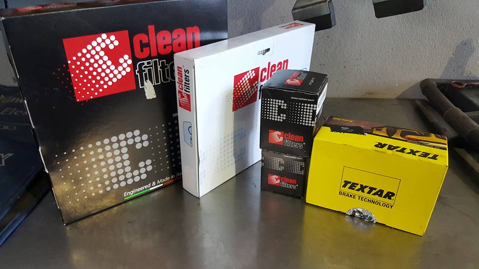
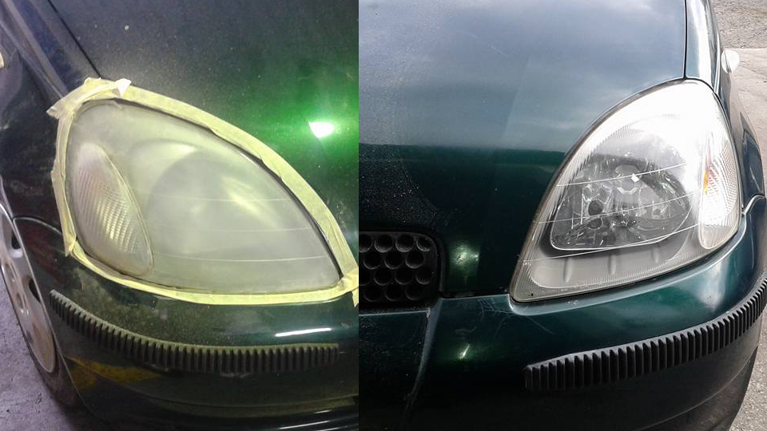
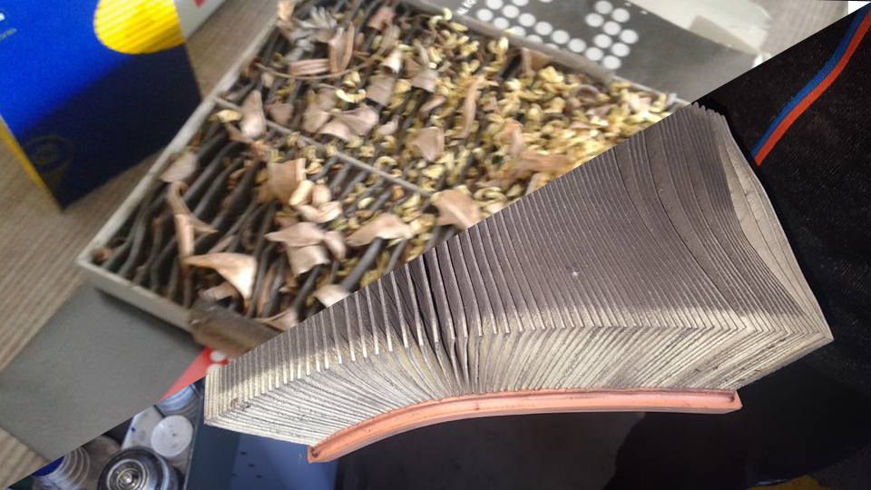
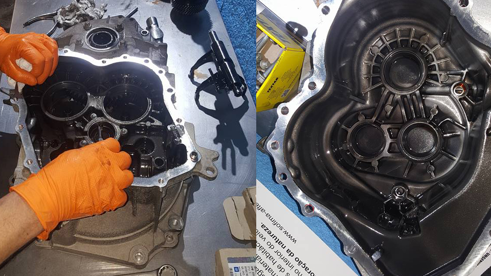
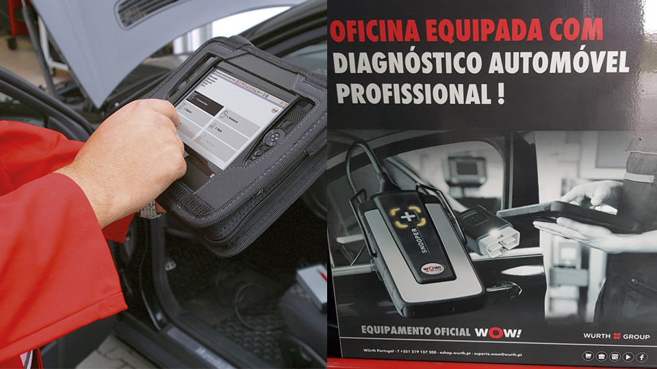

O seu carro está a agir de forma estranha? Não entre em pânico! Os nossos técnicos aliados à tecnologia farão um diagnóstico completo ao seu carro que lhe vai permitir saber todos os problemas a reparar.

Veiculo de trabalho? Uma viagem longa? Inspeção a chegar?
A revisão é uma manutenção personalizada e adaptada a cada carro, quilometragem e tipo de utilização.
Não espere pelas avarias, agende já uma revisão para o seu veiculo e garanta o seu bom funcionamento a longo prazo.

O seu carro deixou-o apeado? Não tema, os nossos técnicos vão tratar do seu veiculo como um filho e colocá-lo a funcionar num instante e melhor que nunca.

Aconselhe-se junto dos nossos técnicos sobre qual o pneu mais indicado para o seu carro e para a utilização que lhe dá. Quando terminar a sua escolha, realizamos a montagem e calibração deles.

Temos um vasto leque de serviços para o acompanhar em todas as necessidades do seu carro. Desde troca da correia de distribuição, mudança de alternador, mudança do motor de arranque ou a troca da embreagem. Verificamos a sua viatura, aconselhamos, e entregamos um orçamento para que tenha o serviço com a melhor relação qualidade/preço.

O ar condicionado fornece uma temperatura agradável interior da viatur e também um interior saudável, sem pólen ou mau cheiro. Tal como todas as outras partes do seu veículo, é necessário verificar, manter e limpar regularmente.

Faróis baços e amarelados? Não coloque a sua segurança e a dos outros condutores em risco. Fale connosco e voltamos a trazer a luz de volta ao seu caminho.

Odores estranhos e má circulação? Rápidamente substituimos os seus filtros e trazemos de volta o ar fresco ao seu carro.
Sempre sobre uma enorme tensão, sofrem igualmente um enorme desgaste. São um dos componentes mais importantes e caso se estrague pode causar danos irreversíveis ao seu motor.

